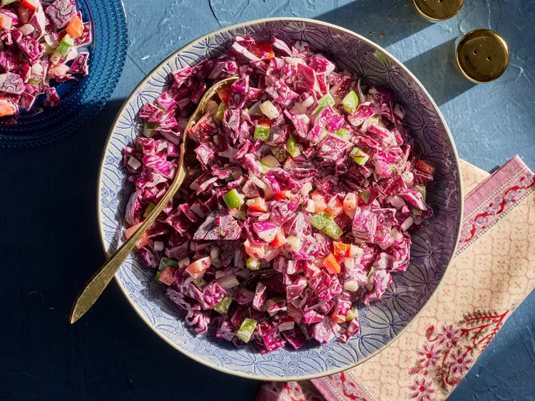

Slaw Recipe :

Description
Made with red cabbage, green bell pepper, and tomato, this recipe is almost as colorful as Dolly Parton's song "Coat of Many Colors."
- 1 medium head red cabbage, chopped (10 cups)
- 1 medium green bell pepper, seeded and chopped (1 cup)
- 1 medium onion, chopped (1 cup)
- 1 cup mayonnaise
- 1/2 cup cider vinegar
- 1/2 cup powdered sugar
- 1 teaspoon salt, plus more to taste
- 1 teaspoon freshly ground black pepper, plus more to taste
- 1 large tomato, chopped (1 3/4 cups)
Steps :-
- Combine cabbage, green pepper, and onion in a large bowl. In a small bowl, whisk together mayonnaise, vinegar, powdered sugar, salt, and black pepper until smooth. Pour dressing over vegetables, tossing well to combine. Cover and chill at least 2 hours to allow everything to marinate.
- When ready to serve, gently stir in tomato and season to taste with additional salt and pepper. (Chill, covered, up to 5 days.)